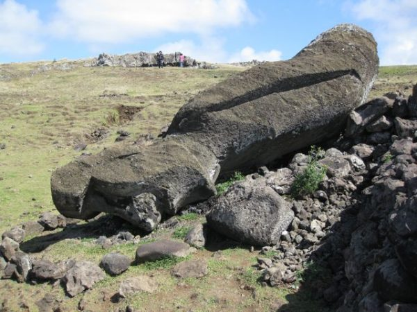
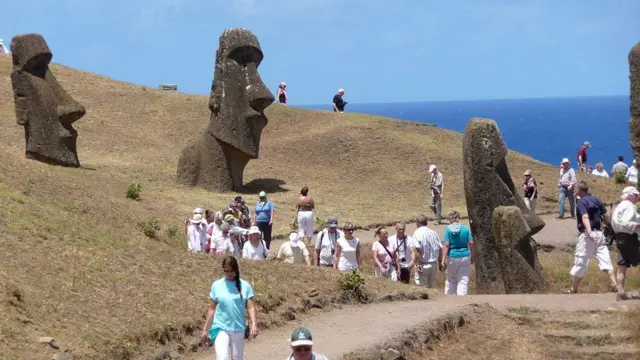
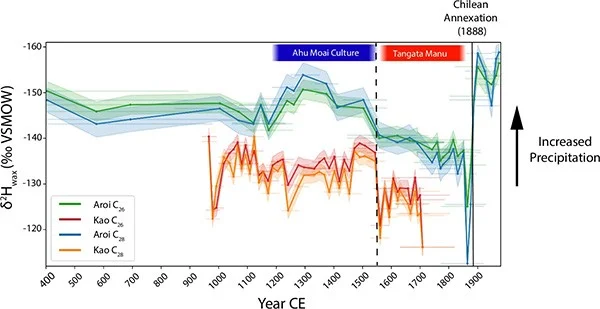

Easter Island
The Enigma of Rapa Nui
Discover the mysteries of Easter Island and its incredible moai statues.
Easter Island
Discover the mysteries of Easter Island and its incredible moai statues.
Easter Island also known as Rapa Nui is an island and special territory of Chile in the southeastern Pacific Ocean, at the southeasternmost point of the Polynesian Triangle in Oceania. The island is renowned for its nearly 1,000 extant monumental statues, called moai, which were created by the early Rapa Nui people.
The moai statues are monolithic human figures carved from stone by the Rapa Nui people, on Rapa Nui (Easter Island) in eastern Polynesia between the years 1250 and 1500. The average Moai stands about 13 feet tall . However, the tallest erected Moai, called Paro, is nearly 33 feet tall.
Most weigh about 14 tons, with some reaching up to 82 tons.
The moai are carved from volcanic tuff, a compressed volcanic ash, found at Rano Raraku. However, there are 3 moai carved from basalt, 22 from trachyte and 17 from fragile red scoria.
There are over 900 moai statues on Easter Island.
The volcanic tuff used to carve the Moai is susceptible to erosion from wind and rain, gradually wearing away the statues' features.

Tourism brings revenure but also poses a threat to the Moai through physical damage and environmental stress.

Rising sea levels and increased storm activity threaten the coastal ahu platforms, putting the Moai at risk of damage or collapse.

Efforts are being made to balance tourism with respect for the Rapa Nui culture, ensuring that the Moai remain a symbol of their heritage.
The volcanic tuff used to carve the Moai is susceptible to erosion from wind and rain, gradually wearing away the statues' features.
Tourism brings revenure but also poses a threat to the Moai through physical damage and environmental stress.
Rising sea levels and increased storm activity threaten the coastal ahu platforms, putting the Moai at risk of damage or collapse.
Efforts are being made to balance tourism with respect for the Rapa Nui culture, ensuring that the Moai remain a symbol of their heritage.